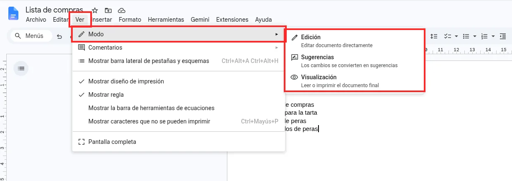
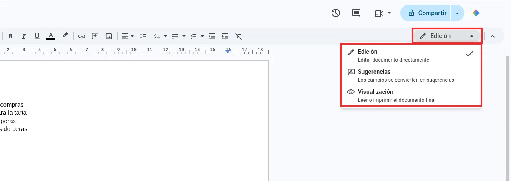
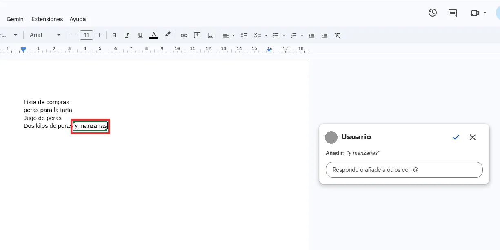
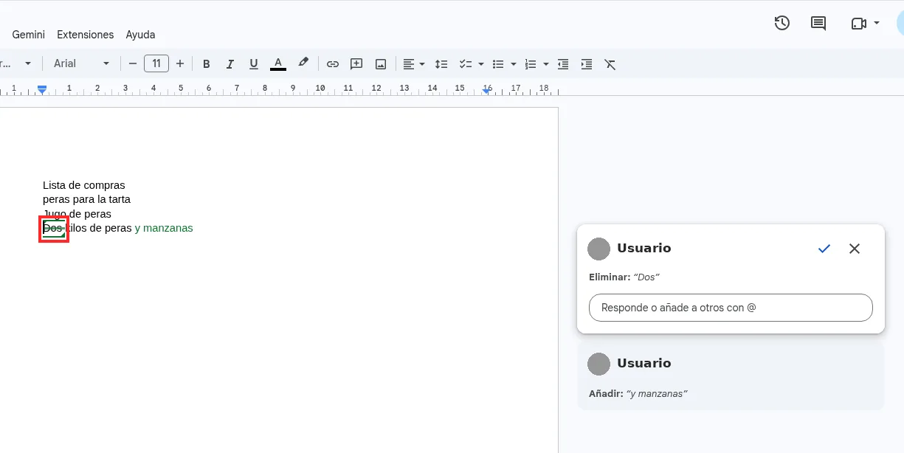
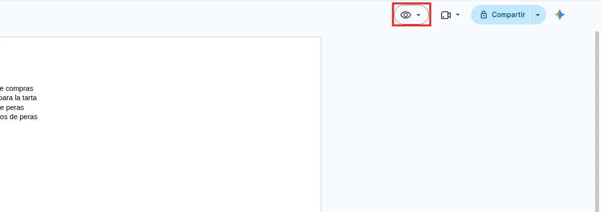
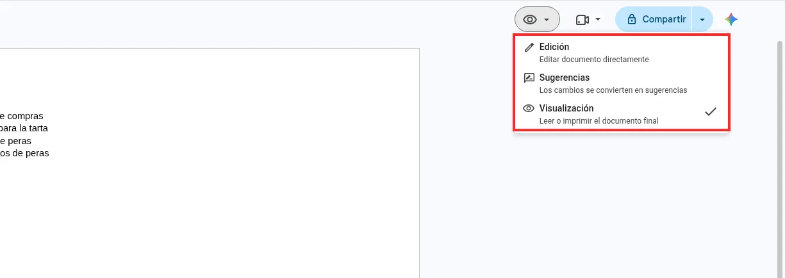

Curso de Google Documentos › Ver › Lección 13
Lección 13 de 53 · menú Ver
Modos de Google Docs: Edición, Sugerencias y Visualización
Fecha del video: · Programado
¿Querés corregir un documento sin pisar el texto original, o leerlo sin cambiar nada por error? Google Docs tiene 3 modos: Edición, Sugerencias y Visualización. Se eligen en el menú Ver → Modo o con el botón de modo de la barra, arriba a la derecha.
En el ejemplo usamos el documento «Lista de compras»: agregamos y borramos texto como sugerencia y después rechazamos las sugerencias. El documento quedó como estaba.
Paso 1: elegí el modo en Ver → Modo
Andá a Ver → Modo. Vas a ver las 3 opciones, cada una con su descripción: Edición («Editar documento directamente»), Sugerencias («Los cambios se convierten en sugerencias») y Visualización («Leer o imprimir el documento final»).

También podés cambiarlo con el botón de modo de la barra de herramientas, a la derecha (muestra el modo actual, por ejemplo Edición con el lápiz). Al tocarlo se abre el mismo menú.

Paso 2: sugerí cambios sin pisar el texto
Elegí Sugerencias y escribí normalmente. Lo que agregás aparece en otro color (en el ejemplo, « y manzanas» en verde) y a la derecha aparece una tarjeta con la sugerencia.

Lo que borrás no desaparece: queda tachado como sugerencia (en el ejemplo, la palabra «Dos»). El propietario del documento decide en cada tarjeta si acepta (✓) o rechaza (✕) el cambio.

Paso 3: leé sin tocar nada en Visualización
Con Visualización se ocultan los menús y la barra de edición: podés leer o imprimir el documento sin cambiar nada por accidente. El botón de modo pasa a mostrar un ojo.

Para volver a editar, tocá el botón del ojo y elegí Edición.

Tip: si alguien te compartió el documento solo con permiso para comentar, Google Docs te deja sugerir cambios pero no editar directamente. Mirá también la lección de el menú Ver completo.
Mirá el Short
Estreno del Short: 27/11/2026 · 17:00 (hora Argentina)
Video relacionado: Google Docs: menú Ver paso a paso (tutorial completo) — el video largo del menú Ver (verlo en YouTube).
Fuente oficial: Ayuda de Editores de Documentos de Google. Capturas propias en un documento de ejemplo («Lista de compras»). El video usa voz generada con IA.